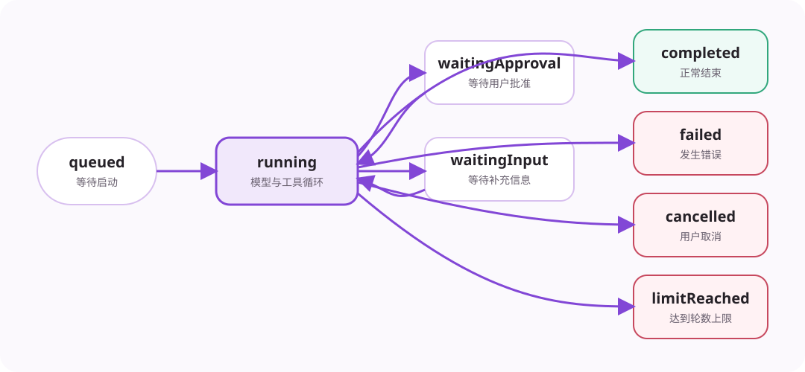

TurnRunner 是一次用户请求的状态机。它决定何时调用模型、何时执行工具、何时继续，以及怎样安全结束。

start() 检查 Session 是否已经有活动 Turn，创建 Turn 和取消控制器，保存用户消息与附件，然后异步进入 run()。它立即返回 Turn 标识，使界面保持响应。
简化主循环for (iteration = 1; iteration <= 24; iteration++) {
consumeInterventions();
const context = await buildContext();
const answer = await streamModel(context);
await saveAssistant(answer);
if (answer.toolCalls.length === 0) return complete();
const results = await toolExecutor.executeBatch(answer.toolCalls);
await saveToolResults(results);
if (finishSucceeded(results)) return complete();
}
return limitReached();
模型发出工具请求后，后续每条工具结果必须能找到对应请求。TurnRunner 先保存带工具请求的 assistant 消息，再执行工具并保存结果。即使中途退出，恢复器也能识别并清理不完整消息组。
连续只读探索达到阈值后，TurnRunner 先提醒模型收敛；继续只读会返回明确的预算耗尽结果。连续工具失败、连续输出截断和 24 轮上限也各有独立终止规则。
一个 AbortSignal 从 TurnRunner 传给模型、工具、命令、Hook、摘要和子 Agent。用户取消后，所有仍支持取消的步骤都会收到同一信号。finally 统一释放活动 Turn、审批、输入等待和调用缓存。
AgentCore 不再实现主循环。它只装配 TurnRunner 所需的模型、工具、消息、账本和事件回调，并把 startTurn、cancelTurn 等公共 API 转发过去。
准备事实 → 调用模型 → 保存请求 → 执行工具 → 保存结果 → 判断是否继续。其他能力都围绕这条主干提供保护。